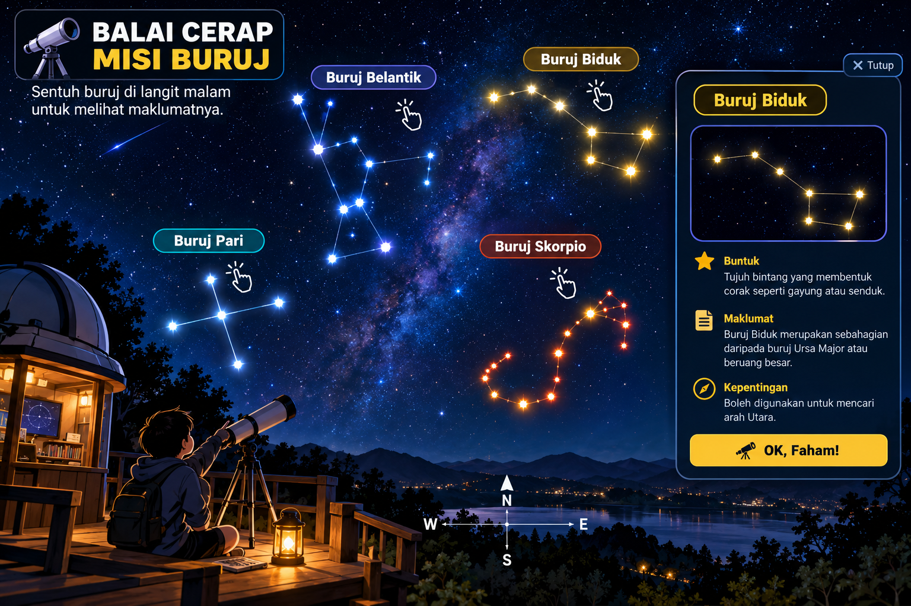

STESEN 1
🔭 Balai Cerap • Misi Buruj
Sentuh salah satu buruj yang bercahaya. Perhatikan bentuk bintang, baca trivia dan kegunaannya, kemudian kenal pasti buruj tersebut.

☝️ Sentuh buruj untuk melihat maklumat
Buruj dipilihBelum dipilih
⭐ Selepas pemerhatian, kenal pasti buruj
📝 Selepas mengenal pasti buruj, tekan Terus ke Catatan dan rekod apa yang kamu perhatikan.